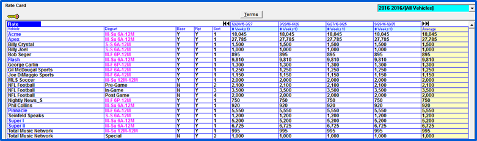
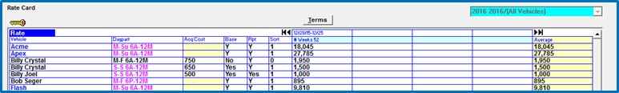

Rate Card Screen
The Rate Card screen lists each vehicle alphabetically followed by all the dayparts defined for that vehicle. This section provides an explanation of each field on the Rate Card screen.

Rate Card Fields and Buttons
- Key: Clicking the key icon provides a legend explaining all color coding.
- Rate/Daypart/Comparisons: There are three optional views on the rate card screen: Rate, Daypart and Comparisons. Click on the blue toggle under the key to change views.
- Rate: The Rate view is the default view and is used to enter and/or alter dayparts and rates for each vehicle or standard package.
- Daypart: The Daypart view shows internal information about each daypart. Daypart information can also be accessed by selecting and double clicking on a previously defined daypart.
- Comparisons: The Comparisons view is used to compare a rate card to a budget or plan, in order to determine what rates, if any, need to be altered to make plan.
- Terms: The Terms button allows you to define a new Rate Card.
- Rate Card Dropdown: The dropdown menu in the upper right corner allows you to select different rate cards that have been entered into the system.
- Vehicle and Daypart: All vehicles and standard packages appear in alphabetical order, followed by all dayparts they are associated with.
- CPM: On version 8.1 and above, if the Ad Server option is enabled, the CPM field will be shown on the Rate Card screen. This field is only accessible for vehicles set to the Podcast/Ad Server medium type, and is used to set the default CPM for Ad Server lines using this vehicle/daypart (ad location) combination. (Version 8.1 and above.)
- Base Daypart: Base Dayparts are used when creating a Budget and on the reports Sales Vs Plan and Average Prices Needed to make Plan
- Report Daypart: Setting the Report Daypart box to “Yes” will make this daypart appear on all reports that include breakdowns by daypart. Answering “No” means that it won’t appear on reports such as the Avails report and the Inventory Valuation report.
- Sort Code: The sort code number is used to determine the order in which dayparts will print for a vehicle on various reports
- Quarter/Month/Week/Flight: There are four ways to view rate information: Quarter, Month, Week, Flight. The system defaults to the Flight view, allowing you determine the number of weeks for which each rate applies.
- Average: If a vehicle rate varies over the course of the year, the Quarter, Month, and Flight view will display an average of the weekly rate.
- Show By: Rate Cards are always entered by the standard broadcast calendar. If a corporate calendar is defined, mouse clicking on the corporate calendar radio button shows the rate card information defined for the standard broadcast year, in the corporate calendar view.
- Done: This saves any changes made to the Rate Card and returns to the Jobs Screen.
- Cancel: This returns to the Job Screen, without saving any changes to the current Rate Card.
- Save: This saves changes to the Rate Card, and remains on the Rate Card
- Erase: Erases the rate card. A rate card cannot be erased if it’s referenced by any contracts in the system.
- Undo: This undoes any changes that were entered in the current session.
- Report: This takes you to the Report Screen.
- Std Pkg: This button allows you to enter Standard Packages (described in detail in a later section of this document).
- CPM Pkg: This button is used to access the CPM Standard Package screen. (Version 8.1 and above only, and only when the Ad Server feature is enabled.)
- Duplicate: Brings up another screen that is used to duplicate daypart definitions from one vehicle to one or more other vehicles. This feature is described in a later section of this document. (Available on version 7.1 and above.)
- Impact: This allows the user to select from a list of current proposals and display the effect their acceptance will have on making budgets and calculate the revised spot prices needed to make budget if the proposals are accepted.
- Trash icon: If a vehicle/daypart needs to be removed from a rate card, select the vehicle and drag the line to the trash icon.
- Import rates from a file: This button appears in the lower left corner of the Rate Card screen (on Version 7.1 and above) and is used to import rate card rates from a properly formatted CSV file. Press the button and browse to the file to import the data. (The package rates can also be automatically recomputed based on the hidden line rates when running this import by checking the corresponding checkbox.) The import file must be in comma delimited format, with a CSV extension, and where each row consists of the vehicle name, daypart name, and rate (in whole dollars), like the example below shows.
Example:
Billy Joel,S-S 6A-12M,2000
Bob Seger,M-F 6P-12M,3000
Phil Collins,M-Su 6A-12M,4000
- Recompute package rates from hidden: Press this button to recompute package rates for the selected rate card based on the hidden line rates (Version 7.1 and above).
Acquisition Costs
In Version 7.1 and above, if “Barter” is checked in Traffic Site Options->Options, an additional column labeled “Acq Cost” (Acquisition Cost) will appear on the Rate Card screen.

The acquisition column allows you to define acquisition costs for selling and conventional vehicles. These costs will appear on the contract schedule lines, insertion orders, and accounting reports. These rates can be altered on the contract if the user has permission to do so (see the User Options document for information).
If entering acquisition dollars in gross, you can define an acquisition commission percentage in Vehicles->Options->Barter, to arrive at the net figure due to the station.